Lecture 9: Building Drift
Moving on from Lecture 8, where building mass and force distributions were covered, let’s now learn about how a building moves, or deflects
, due to earthquake forces and how we account for it in design. This section will focus on building drift, the application of deflection and drift requirements, and P-Delta effects. There will be several examples throughout this lecture to help incorporate and reinforce the material. The image below provides a visual summary of the material that has been covered up to this point.

Exam Requirements:
- Drift and P-Delta effects
- Application of deflection and drift requirements
- Deformation compatibility requirements for structural and non-structural elements
- Required building separation and setback
Building Drift
Building story drift is the sideways deflection of the upper floor relative to the sideways deflection of the bottom floor for a given story. It can also be defined as the sideways or lateral deflection between two adjacent stories. The figure shown below depicts the story drift for a single-story building.
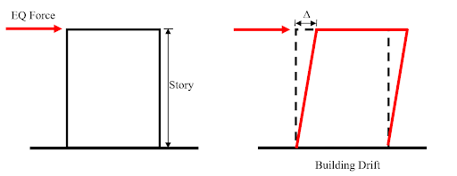In the event of an earthquake, large lateral forces may be imposed on the structure which will result in story drifts. These deformations of the structure can negatively affect both the structural and non-structural elements of the structure and may also adversely affect any adjacent structures. Therefore, the story drifts must be properly assessed according to the CBC building code and ASCE 7 - 16 standard to avoid any casualties. We will understand this in more detail in the upcoming sections.
Cracked Walls
What is the significance of building drift? What happens when a building moves sideways due to the lateral forces acting on the building? To understand this, let us consider the aftermath when an earthquake struck at Nepal on April 25, 2015. Below are some pictures of the damage to the buildings due to the earthquake:
Fourteen-story reinforced concrete structure damaged after the Gorkha earthquake: (a) distribution of the damages from the first to the seventh story; (b) detachment of the walls from the envelope frame; (c) diagonal cracking with slight out-of-plane detachment of the wall.
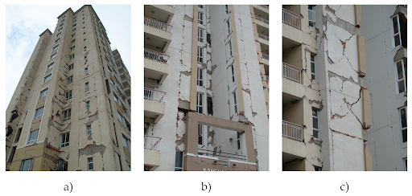Image via mdpi
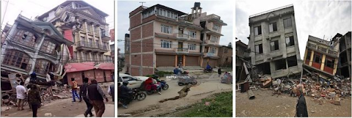Image via researchgate
The first figure above shows that the earthquake forces caused the building to drift which resulted in the formation of cracks in the exterior walls. The second figure shows the pounding damage to structures that occur due to the out-of-phase vibration of structures that are constructed next to each other with insufficient building separation.
The mechanism of building drift can be better understood by considering the building before the earthquake to be rectangular in shape, as seen in the figure below. When an earthquake strikes, the lateral forces induce lateral deflections in the building which cause it to move sideways. This results in the building to deform into a parallelogram, producing various strains in the building components (e.g. walls and diaphragms). As a result, cracks form in the walls and glass breakage may occur.
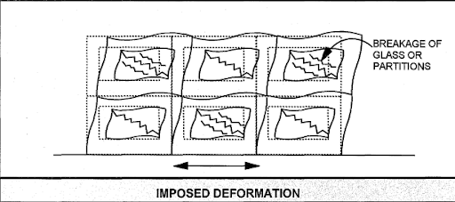Image via fema
Another factor that contributes to the significance of building drift is building separation. The seismic waves produced during an earthquake can cause drift in buildings, moving them sideways in various directions. Consider two buildings constructed next to each other, as shown in the figure below, such that one building moves to the left and the other building moves to the right. This will lead to a collision between the two buildings. Keep in mind that buildings are not designed for impact loads. So, such collisions between buildings are not allowed and must be avoided at all costs.
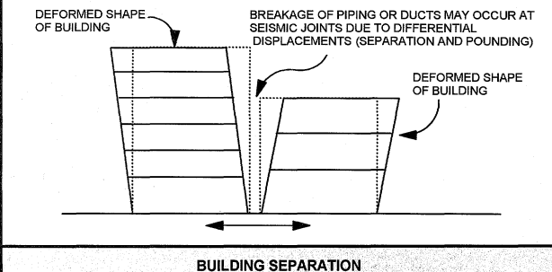Image via fema
Also, keep in mind that there could be breakage of piping or ducts that lie between these structures due to their different lateral displacements.
To avoid such a scenario, we must provide a significant distance between the two buildings such that during an earthquake, there is no collision due to the building drifts in each structure. This method is also known as Building Separation
.
Deflection Ratio
To ensure the safety and functionality of any building component, the code limits the allowable deflection. Most of the time, the allowable deflection for any member or structure is given in terms of the deflection ratio. Let us consider a cantilever beam as shown below:
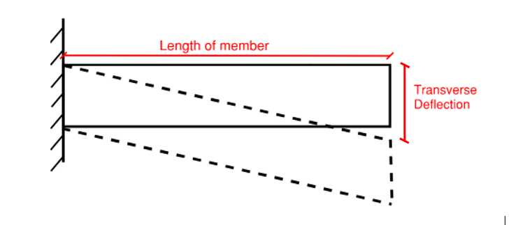Deflection = movement along the direction of applied force
Deflection Ratio = Transverse deflection / Length of Member
Transverse deflection
is the movement along the direction of force, which is acting perpendicular to the longitudinal axis of the member.
Deflection is a general term. It can occur in any direction when a force is applied to an object. When we talk about the sideways or lateral deflection of a building
, we are particularly referring to the building drift
. For this lecture, we are interested in the building drift. Whereas for design purposes and in regard to the code, structural engineers pay more attention to the drift ratio.
What is the drift ratio?
The drift ratio, similar to deflection ratio, is given as:
Drift Ratio = Transverse deflection of the story / Height of the story
To understand drift ratio, consider the figure below of a single story building having a height of 12 feet such that the roof shifts 3 inches sideways:
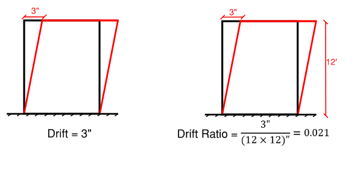The drift of the building is 3 inches, whereas the drift ratio is 0.021. Clearly, the drift is given in units of length, whereas the drift ratio is unitless.
What is the significance of drift ratio?
Imagine that a structural engineer mentions that one of the buildings she designed in San Francisco, California has a drift of 8 inches. So, you use your imagination and think of a 10-story building with a 15 feet story height. 10 inches drift for a 150 feet tall building doesn’t sound too bad, does it? The building will still look very straight and tall. But the engineer then mentions that she is talking about a one-story building with a 15 feet height. Now, the coin has flipped. 10-inch drift for a 15 feet tall building is too large and dangerous. It would look like the building is about to fall over and you wouldn’t want to go inside. Clearly just knowing the drift isn't enough to evaluate if the deflection is acceptable, it depends also on the story height.
With many buildings being built around the world with different numbers of stories and different story heights, it is not possible to limit the allowable story drift for all case scenarios. Therefore, the concept of drift ratio is introduced.
Drift ratio is a single number that tells the amount of story drift per story height, or the slope. If the slope is too steep, then the drift ratio is too small, and the drift is too large for the given story height. Such steep slopes need to be avoided.
So, to maintain consistency and reduce confusion for structural engineers, the structural codes limit the allowable story drift ratios instead of the story drift. This makes the job for us structural engineers so much easier because the allowable story drift ratio is a unitless number irrespective of the story height of a building, and simpler to apply to any sort of structure.
Restrictions
As mentioned in the previous section, there are restrictions on the allowable deflections for walls, roofs, floors, and other building components to ensure safety and functionality. These restrictions are given in Table 1604.3 of Chapter 16 in the 2019 edition of CBC, as shown below.
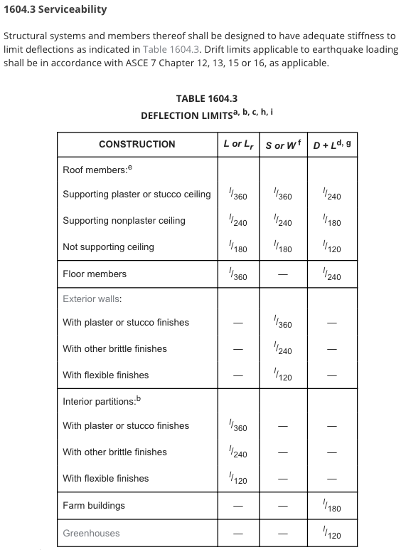These deflection limits apply to any deflection that occurs in any direction for any purpose. They are given in terms of Length/# where this number # is dependent upon:
- 1. Cracking the architectural finish that is affixed to the structural element
- 2. Deflections that can be noticed by humans when walking on the structural element (like a floor)
The deflection limits are tied to different construction types, and different load types (Live, Dead, Snow, and Wind) as shown in table 1604.3 of CBC above.
These deflection limits per CBC are for the deflections
, not drift. These would commonly be used in the design of structural members that are resisting gravity loads. In this lecture, we are primarily covering drift requirements. So, for drift limits applicable to earthquake loading, the CBC points to ASCE 7-16, Chapters 12, 13, 15 or 16 as applicable. These drift limits are described as the in plane deflection
from a lateral load in the direction of the applied seismic force.
What is the difference between in plane and out of plane deflection?
In Plane vs Out of Plane Deflection
Let’s consider a single-story structure with a load acting on it, as shown in the picture below.
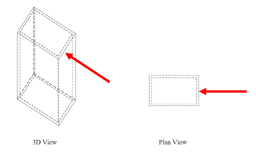When the forces act along the longer dimension i.e. the length of the wall, it deflects as an in-plane deflection, as shown in the figure below.
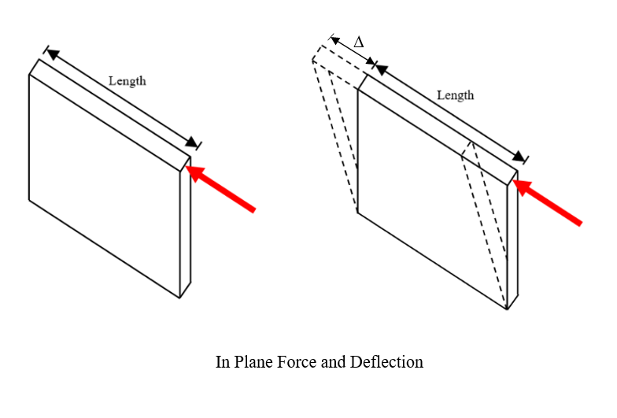Now, if the force acts along the shorter dimension i.e. thickness of the wall, it is said to undergo out of plane deflection, as shown in the figure below.
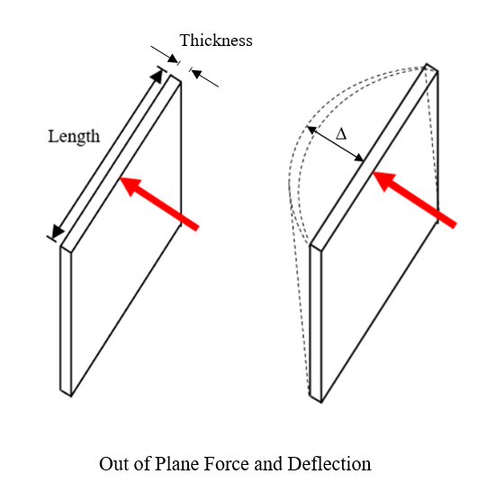If we consider the moment of inertia, stiffness, and deflection for the two cases:
Moment of inertia, I = (wall thickness) (length)3/12; (for in plane forces)
I = (length) (wall thickness)3/12; (for out of plane forces)
Stiffness, K = 3EI/L3
Deflection = PL3/3EI
Based on the geometry for in plane loads acting on the structure, the force is aligned with the longest direction of the wall which contributes to the moment of inertia by a cubic factor. This results in the moment of inertia of the wall to be large, leading to higher stiffness and small in plane defections in the structure. Whereas for out of plane forces, the moment of inertia is much smaller considering that the force is aligned with the smaller direction of the wall. This geometry leads to lower stiffness and large out of plane deflections in the structure.
So, depending upon the lateral forces and their direction of application we can have in plane deflections or out of plane deflections, and the structure elements may or may not have enough stiffness to resist these deformations.
Inelastic vs elastic deflection
Let’s recap what has been covered so far. When an earthquake strikes a structure, the design level accelerations will accelerate the masses that are spread across the vertical height of the building. The building will resist the acceleration of these masses, which will be felt as force. That force will add up all the way to the base of the structure (as internal shear force).
For whatever lateral system we choose, during an EQ, forces will develop in the structure. And if these forces exceed the maximum limit for that lateral system to yield, then it will lead to inelastic deflections in the structure. On estimating the inelastic deflections, we can then calculate the story drift.
It is important to note that the deflections calculated in the stories using the design level base shear, V, are not the expected inelastic deflections. To understand this, consider the ductility graph again, as shown below in the figure.
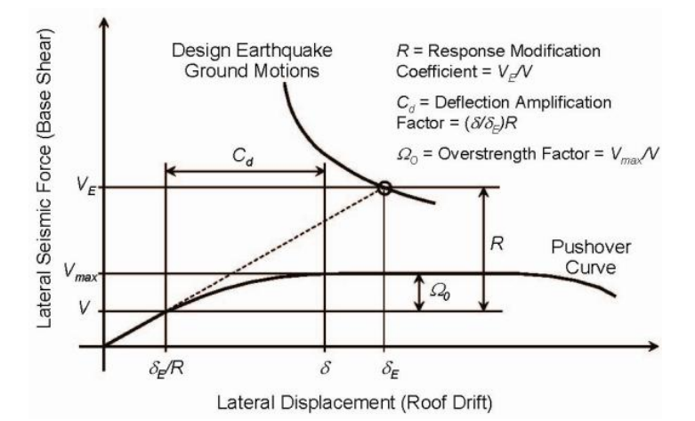The graph lets us calculate the deflection at a point due to the design level base shear, V, in the elastic range. This elastic deflection is reduced using the response modification factor, R, because of the ductility of the structure. But, the expected deflection corresponds to the inelastic behavior and must be computed corresponding to the maximum base shear, Vmax.
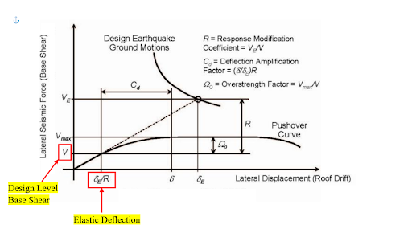Performing inelastic analysis for large structures can be quite complex. So, the easiest way to compute the expected deflection at any point in the structure is by first calculating the deflection from the elastic analysis and then amplifying it by a factor to bring it to the inelastic range. This factor is known as the Deflection Amplification Factor, Cd.
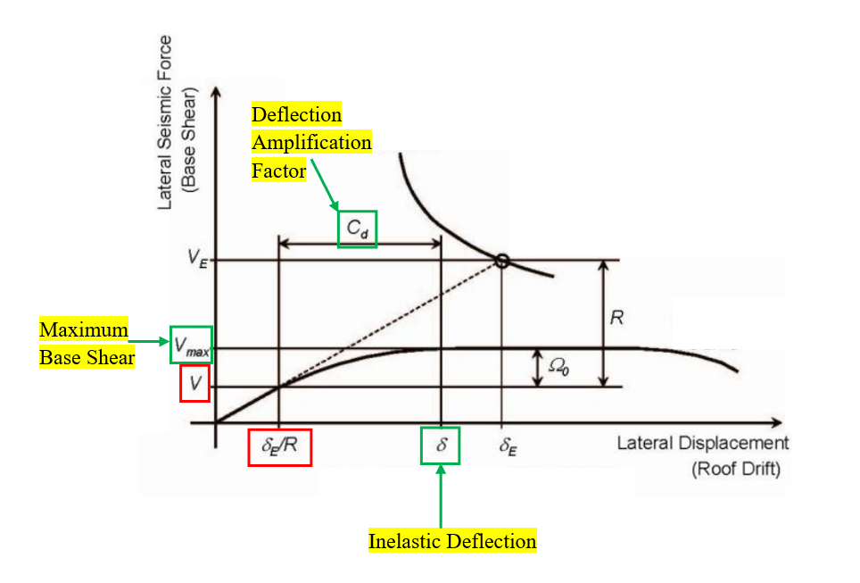(Under-conservative deflection) x Cd = Accurate deflection
In other words (using the ASCE 7-16 terminology):
Elastic Deflection x Cd = Inelastic Deflection
Cd factor increases the design level force (used for elastic design) to match the expected INELASTIC deflection. And finally, these inelastic deflections are used to calculate the story drift for the structure.
Now that we have discussed the different factors that are applied to find the story drift, let’s also consider the factors that are not
applied to the story drift. Factors of safety are not considered with drift though they are very important in terms of loadings acting on the structure.
For structural design, failures can be life-threatening. To avoid such failures, we design the structure for loads larger than the anticipated loads. This way we can ensure that the structure has enough capacity to resist the anticipated loads, and some more. This has been incorporated in the code using two methods - by either factoring up the loads and lowering the resistance capacity (LRFD method), or just using a safety factor on the capacities (ASD method). Either way, some factor of safety is applied to the structural design because if the load on the structure exceeds the design load, it will lead to life-threatening structural failure.
When it comes to the drift check, we do not apply any factors of safety to the drift limits or drift capacity. This is because walls and other architectural components typically have a known deflection limit. So, we want to know the actual anticipated deflection of the structure to make the comparison. Even if the story drift in the structure exceeds its limit, it is less likely to be life-threatening. Yes, it will lead to some damage to structural and non-structural elements of the structure such as cracks in walls and breakage of glass, but such damages can be repaired. So, such failure will lead to monetary loss which will NOT endanger lives like a structural element failure.
Keeping these factors in mind, let’s learn how to determine the story drift.
Story Drift Determination
Now that we have defined drift and deflection, let’s move on to learn how to determine the actual story drift. Story drift is the difference between the deflections at the centers of mass at the top and bottom of a particular story. For structures with no torsional irregularities, story drift is computed based on the centers of mass, which align vertically with each other. If they don’t align vertically, a vertical projection of the center of mass at the top of the story is used as the center of mass at the bottom of the story to determine the story drift. The design story drift is computed using the Equivalent Lateral Force Procedure, as specified in ASCE 7-16 Section 12.8, where allowable stress design is used. No reductions are used with this method.
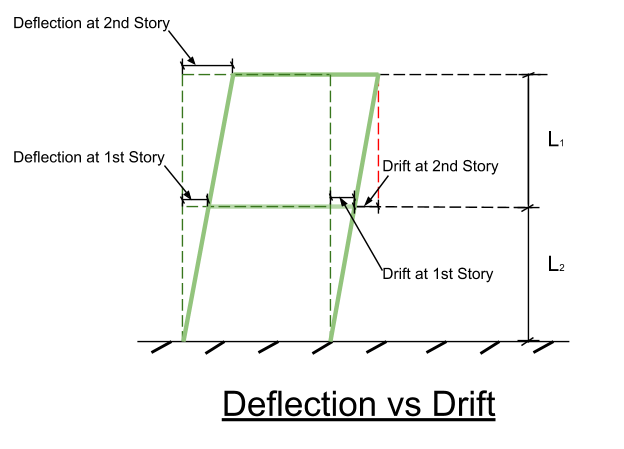 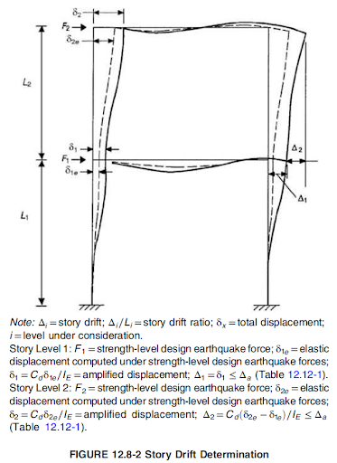ASCE 7-16 Figure 12.8-2
Figure 12.8-2 shows the determination of story drift for the first and second stories of a 2-story frame. There are a lot of different variables, so let’s start on the left of the figure. The stories have heights L1 and L2 (highlighted in yellow below) for stories 1 and 2, respectively. The δ represents displacement. Like the story heights, the numerical value next to delta represents the particular story. For example, δ1, highlighted in green below, represents the displacement of the first story. δ1, the letter e
stands for elastic analysis, in other words, δ1e (highlighted in orange below) represents the elastic displacement of the first story.
ASCE 7-16 Figure 12.8-2
Remember that the elastic behavior of the structure is amplified to better represent the inelastic behavior, which is then used to determine the building drift. This is shown by the two deflected versions of the frame: one dotted and one bolded. The dotted frame represents the elastic behavior of the structure, while the bolded frame illustrates the inelastic behavior of the structure. Similarly, δ1e and δ2e represents the total elastic displacements of the first and second stories, while δ1 and δ2 represents the inelastic (amplified) displacements for the corresponding stories.
$$δ_1_e = Total Elastic Displacement @ Level 1$$
$$δ_2_e = Total Elastic Displacement @ Level 2$$
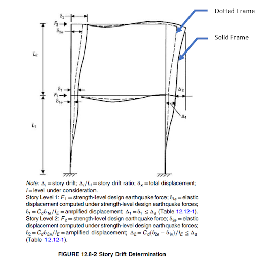ASCE 7-16 Figure 12.8-2
Moving on to the right side of the figure, you will see two small triangles with the numbers 1 and 2: $$Δ$$ (highlighted in yellow below). They are the story drift for the first and second stories. Using the previously defined definition of story drift, the story drift of the first story is the difference between the inelastic (amplified) displacement at the top and bottom of the first story. Since there is no displacement at the bottom of the first story, the story drift at the first story is just the inelastic displacement experienced at the top of the first story. This is different for the story drift of the second story. Since you can see that there is inelastic displacement at the top and bottom of the second story, you can determine the design story drift for the second story by finding the difference between the two displacements.
Story Drift @ Second Story = “Inelastic Displacement @ Second Story” - Inelastic Displacement @ First Story
$$Δ_2 = “δ_2” - δ_1$$
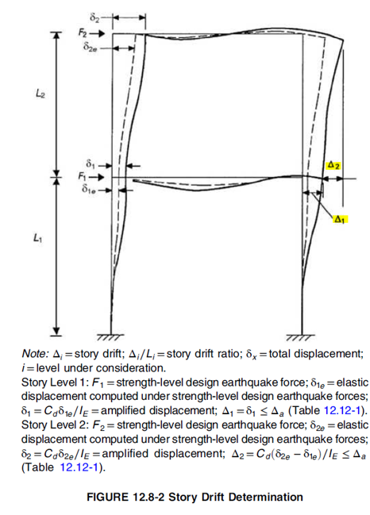ASCE 7-16 Figure 12.8-2
For structures that are assigned to Seismic Design Category C, D, E, or F with torsional irregularities (as specified in Table 12.3-1), the centers of mass are not used to compute the design story drift. Instead, the difference between the deflections at vertically aligned points between the top and bottom of a story are used to calculate the design story drift. The specific edge of the structure doesn’t matter. This difference in computation is not likely to be tested on the seismic exam, it will be obvious how to read any given deflections for drift calculations.
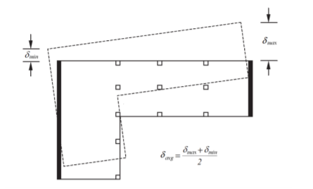Image via IOSR
Determination of DesignStory Drift with Torsional Irregularities
ASCE 7-16 Equation 12.8-15: $$δ_x = (C_dδ _\text"xe")/I_e$$
The design story drift, $$δ_x$$, otherwise known as delta x
, is computed using ASCE 7-16 Equation 12.8-15. The Cd factor amplifies the design level elastic force to better match that of the expected inelastic behavior of the structure, which undergoes inelastic deflection. The elastic deflection at level x, $$δ_xe$$, is computed based on the base shear, and used to determine the inelastic displacement (or the design drift) at level x. The Importance Factor, Ie, is in the denominator to cancel the Importance Factor used in the base shear computation. This exclusion removes the exaggeration influence of the Ie factor and shows the correlation between the drift requirements and the risk categories. As a result, the seismic design philosophy
is still present in the determination of the actual deflection.
For the determination of the base shear for drift, there are two reductions that are included. The first reduction comes from ASCE 7-16 Section 12.8.6.1. The elastic displacement in Equation 12.8-15 comes from the minimum base shear computed as specified in ASCE 7-16 Section 12.8. From Lecture 7, the base shear is the product of the seismic response coefficient, Cs, and the effective seismic weight, W. Remember that there were several limits for the Cs factor? For determining drift, you have one less limitation to worry about. You don’t need to adhere to ASCE 7-16 Equation 12.8-5 because drift is more cost-based, which means that additional safety limits are not required to provide for reasonable building safety.
ASCE 7-16 Equation 12.8-5: $$C_s = 0.044S_\text"DS"I_e≥0.01$$
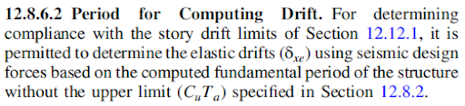The second reduction comes from ASCE 7-16 Section 12.8.6.2. To determine the base shear for drift, the actual computed period can be used in the calculations. This means that there is no upper limit for the period T, which essentially implies that the product of Cu and the approximated period, Ta does not need to be checked for as the limit in the analysis. Lateral forces that have a limiting period can overestimate lateral displacements. This can result in higher costs. From the acceleration response spectrum, longer periods correlates to lower accelerations, which is beneficial for tall buildings.
Story Drift Limit
After learning about the significance of building drift, the restrictions, and deflections, let’s learn about the limitations of story drift and how we apply them for different structural systems. Story drift is the difference in deflection between a particular diaphragm and the diaphragm level below. The limitations of story drift for any type of structure are outlined in ASCE 7-16 Section 12.12.
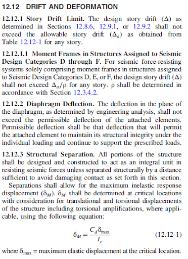 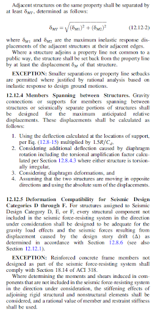ASCE 7-16 Section 12.12
Section 12.12.1 introduces Table 12.12-1 of ASCE 7-16, which lists the allowable story drift based on the structural system and risk category. Allowable story drift can only be applied for earthquakes and building structures as a whole. This means that individual building components cannot be analyzed for drift using Table 12.12-1 or allowable story drift because it is not applicable.
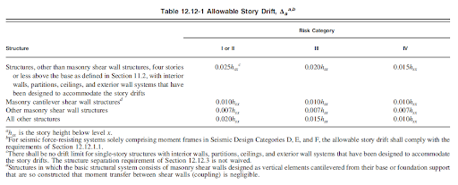ASCE 7-16 Table 12.2-1
Note that there are a couple of footnotes tied to Table 12.12-1. The first footnote dictates the allowable story drift equation for moment frames assigned to Seismic Design Categories D, E, or F, which can be found in ASCE 7-16 Section 12.12.1.1.
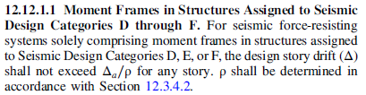ASCE 7-16 Section 12.12.1
The second footnote states that single-story structures designed for story drifts are not required to follow the limitations of story drift as outlined in Table 12.12-1; however, structural separation is still required. This design provision is allowed for single-story structures as long as it can be proven that these simple structures have sufficient connections that are able to experience drift and provide a reasonable amount of building safety.
Moving on from the story drift limits, Section 12.12.2 details the restriction regarding diaphragm deflections. The allowable diaphragm deflection can’t be greater than what will cause the connections to fail (or become unattached and unable to support loads).
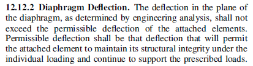ASCE 7-16 Section 12.12.2
To provide for building safety, structural separations are permitted and explained in Section 12.12.3. Section 12.12.4 provides design provisions on members that span two or more structures. Even though you should expect to be tested on the requirements listed above on the Seismic Exam, you will not be expected to determine the actual drift on a structure. This would require more sophisticated approximations of the building lateral system that are dependent on the specific material.
Structural Separation
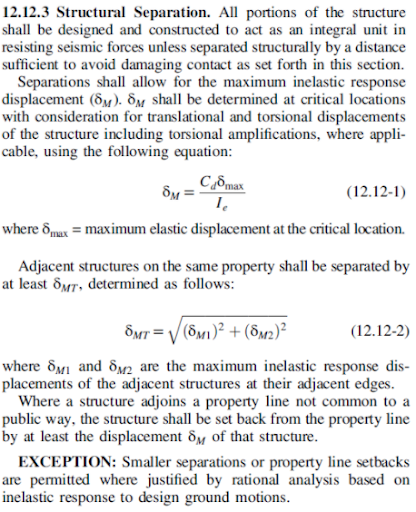ASCE 7-16 Section 12.12.3
When you think of a building, you usually imagine the structure moving as one unit, right? If the building were to move as anything else, you would normally think that would not be safe because the building can experience breakage and not provide building safety. Even though that is true, a structural system is actually also permitted to have structural separations to provide for additional building safety. These structural separations allow for the maximum inelastic response displacement of a structural system to avoid contact with any surrounding buildings that could cause damage. Equation 12.12-1 provides the calculation for the inelastic response displacement. This prevents buildings from colliding or crashing into one another in the event of an earthquake and causing additional damage. Structural separations are usually designed at critical locations in the structure to account for torsional and translational displacements.
Generally, there is a minimum distance required for buildings to be setback
from the property line in land development. This provides for spacing separation between different land uses. For buildings that are next to each other on the same property, there is a minimum distance of separation required between these structures. For buildings that are on properties not next to a public right-of-way, there is a minimum required distance for the buildings to be setback
from the property line. There is an exception for smaller separation distances allowed where there is rational analytical justification based on the inelastic response to design ground motions. Note that this question is relatively easy to ask on the Seismic Exam, so understand that structural separations are allowed in a building and for buildings located on the same property to provide for building safety.
Practice Problem
Determine the minimum code-required structural separation for two buildings located next to each other on the same property. Building 1 has a Cd factor of 1.5 and a maximum elastic displacement of 4 inches. Building 2 has a Cd factor of 4 and a maximum elastic displacement of 2 inches. The Importance Factor Ie is 1.0 for both buildings.
Solution:
Step 1: Determine the maximum inelastic displacement for each building.
Building 1: $$δ_1 = (C_dδ_x_e)/I_e = (1.5*4)/1 = 6.0 inches$$
Building 2: $$δ_2 = (C_dδ_x_e)/I_e = (4*2)/1 = 8 inches$$
Step 2: Determine the difference between the maximum inelastic displacements for each building.
$$δ_M_T =\[√{δ_M_1^2+δ_M_2^2}\] = \[√{6.0^2+8.0^2}\] = 10 inches $$
Answer: The minimum code-required structural separation for the two buildings is 10 inches.
P-Delta ASCE 7
So far, we have covered building drift, design story drift determination, and the respective restrictions outlined in the CBC and ASCE 7-16. For review, a deflection is the displacement of a building component from its original position, with at least one side restrained. This can be the bottom remaining in place for a deflected wall or diaphragm. We have previously gone over deflections that result from lateral loads. Now, let’s move on to learn about deflections that can occur due to eccentric axial loads. We usually don’t think of axial loads causing lateral deflections because they are centric. If an axial load acting on a building component is not centric (eccentric), this can result in secondary stresses and, consequently, excessive deflections. The P-Delta effect describes how eccentric axial loads can cause additional stresses and deflections.
To better understand the P-Delta effect, let’s look at an example where there is a gravity load P and a lateral load L acting on a vertical post with a length L. In the undeflected scenario, the lateral load creates a moment M1, which can be determined by finding the sum of the moments from the base.
Before moving on, just a clarification on the variables used in the images below. Several variables have been used to depict the undeflected and deflected scenarios for a vertical post. The table below lists out each variable and their descriptions.
| Variable | Description |
|---|---|
| P | Gravity Load |
| F | Tranverse Load |
| L | Length of Vertical Post |
| V | Shear |
| C | Compression |
| M1 | Moment in the Undeflected Scenario |
| M2 | Moment in the Deflected Scenario |
For the undeflected scenario: M1 = Transverse Load F x Length of the Vertical Post L.
In the deflected scenario, or when a lateral system deflects too much (excessively), additional stresses will be created in the lateral system as it tries to resist the eccentric axial load. As a result, there is another moment created. By determining the sum of the moments from the base again, you will find that the product of the axial load and the deflection creates a secondary
moment force: the P-Delta effect. In other words, the P-Delta effect causes an increase in the deflections and stresses experienced in a building component or structure, which is not good for building safety. As a result, we need a simple way to deal with it. ASCE 7-16 allows us to do so through the stability coefficient. This will be explained later.
For the deflected scenario, M2 is different from M1. Since the vertical post has deflected, the gravity load P must also be accounted for in the moment in this situation, along with the moment already included in the undeflected scenario. As a result, this creates a secondary moment force, which is the product of the gravity load P and delta Δ.
For the deflected scenario: M2 = (Transverse Load F x Length of the Vertical Post L) + (Gravity Load P x Delta Δ).
ASCE 7-16 Section 12.8.7 denotes when to consider the P-Delta effect for analysis and the maximum allowable stability coefficient θ. Equation 12.8-16 provides the stability coefficient, θ, used to determine whether the P-Delta effect should be used for analysis. The maximum stability coefficient, θmax, is given by ASCE 7-16 Equation 12.8-17. Beta is the demand capacity ratio for a particular story. A demand capacity ratio is the relationship between the amount of load that a building component or system is expected to support/resist and how much load it can actually support/resist (capacity).
ASCE 7-16 Equation 12.8-16: $$θ=(P_xΔI_e)/(V_xh_s_xC_d)$$
ASCE 7-16 Equation 12.8-17: $$θ_\text"max"=0.5/(βC_d)≤0.25$$
To see whether the P-Delta effect should be included for design, you have to check against the stability coefficient value of 0.10. If the stability coefficient is less than or equal to 0.10, then P-Delta is not included in the analysis. On the other hand, if the stability coefficient is greater than 0.10, then the forces are to be increased by a factor specified in Section 12.8-7 or based on rational analysis. If the stability coefficient of a structure is greater than the maximum allowed stability coefficient, redesign is required because of instability in the structural system.
Nowadays, computer software programs are used more commonly for analysis and design. These programs account for the P-Delta effect, which means that if you use ASCE 7-16 Equation 12.8-16 with values from the software, you can divide theta by (1+theta) to avoid accounting for P-Delta twice. ASCE 7-16 Equation 12.8-17 must still be checked, nonetheless.
This wraps up the chapter on building drift. We have covered deflection, drift, the application of deflection and drift requirements, required building separation and setback, and P-Delta effects. To help reinforce the content that you have learned, below are a few sample questions that you can practice on. Additional links to more resources are at the bottom of the page.
Sample Questions
Question - Determine the story drift and story drift ratio based on the following figure: 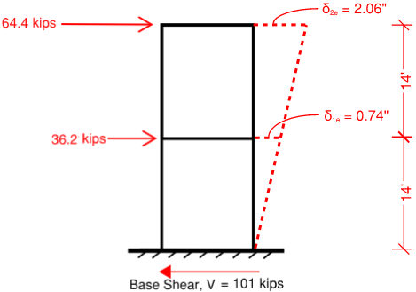
Solution:
For story drift, you take the difference between the deflections of each level.
$$ ∆ = 2.06” - 0.74” = 1.32” $$
For story drift ratio, it is the drift divided by Li is the level under consideration.
$$ ∆_i/L_i = (\ 1.32^" /12^") /14^' = 0.0079 $$
Question: What is the seismic base shear of the following structure? The city of Minneapolis noticed that the Wells Fargo Center was sinking 30” into the ground and decided to demolish the building as it is too hazardous for human safety. However, Wells Fargo wants to establish a taller building than the previous somewhere else, so they want you, as the seismic engineer, to design an office building that can meet their expectations. Wells Fargo wants a 800 ft tall steel moment resisting frame and for the effective seismic weight to be no more than 8000 kips, where site class = C. SS = 1.039, S1= 0.372, TL = 4.
Solution:
Step 1: Determine SDSand SD1. Start by determining the site class. Check ASCE 7 Table 20.3-1. In the problem statement, the site class = C. Refer to ASCE 7 section Tables 11.4-1 and 11.4-2. Plugging in Site Class C with the given S1, SS values, we get Fa = 1.2, Fv = 1.5. Use eqn 11.4-1 and 11.4-2, to determine MCE level accelerations.
SMS = Fa SS = (1.2) x (1.039) = 1.24
SM1 = Fv S1 = (1.5) x (0.372) = 0.558
Using ASCE 7-16 eqn 11.4-3 and 11.4-4, we determine SDS and SD1.
SDS = (⅔)(SMS) = (⅔) x (1.24) = 0.833g
SD1 = (⅔)(SM1) = (⅔) x (0.558) = 0.372g
Step 2: Determine the Risk Category. Check IBC Table 1604.5 for the risk category. Let’s check IBC Chapter 3 which category Wells Fargo center falls under. So for this problem, let’s check out section 304 to see additional definitions for occupancy categories. IBC Section 304.1 notes that office buildings shall be classified as Group B. Referencing back to Table 1604.5, Group B shall be categorized under Risk Category II. Note that IBC is used instead of CBC since the problem states that the location is in Minneapolis.
Step 3: Determine the seismic importance factor, Ie and response modification factor R.
Now that we know our risk category, refer to ASCE 7-16 Table 1.5-2, Ie = 1.0 for risk category II structures. In the problem statement, it states that the office building should be a steel moment resisting frame, so refer to ASCE 7-16 Table 12.2-1 where R = 8.
Step 4: Determine the seismic response coefficient, Cs
$$\C_s = \S_D_S / (R/I_e)= \ 0.833 / (8/1.0) = 0.104 $$
Notice that TL = 4. Refer to equations 12.8-3 and 12.8-4. We will need to determine the approximate fundamental period to compare.
$$T = T_a = C_t h_n^x$$ per ASCE 7-16 Equation 12.8-7 and Table 12.8-2
Where Ct = 0.028
X = 0.8
$$T_a = (0.028)(155)^0.8 = 1.58 seconds$$
Since Ta = 1.58 < 4, we will use equation 12.8-3
However, we still need to check the upper limit from Table 12.8-1:
T = CuTa = 1.4(1.58) = 2.212 s
$$\C_s_,_m_a_x = \ S_D_1 / \(T(R/I_e)) = \C_s_,_m_a_x = \ 0.372 / \(2.212(8/1.0)) = 0.021 $$
$$\C_s_,_m_i_n = 0.044S_D_SI_e = (0.044)(0.833)(1.50) = 0.036 $$
Let’s check whether:
- $$\C_s ≤ \ S_D_1/ \(T(R/I_e)) $$
- $$ C_s ≥ 0.44S_D_SI_e $$
0.104 ≤ 0.021 ✖
0.104 ≥ 0.036 ✔
Since Cs is not less than or equal to $$ \ S_D_1 / \(T(R/I_e)) $$, the governing value to use is 0.021 for the seismic response coefficient.
Step 5: Determine the minimum base shear for drift.
Before we determine the base shear, ASCE 7-16 section 12.8.6.2 states that if we are finding a period for drift, then we do not need to consider the upper limit (CuTa). Hence, we need to recalculate our Cs calculation since it was based on T.
Now we will use the Ta for the period when determining which Cs governs.
$$\C_s_,_m_a_x = \ S_D_1T_L / \(T(R/I_e)) = \ 0.372 / \(1.58(8/1.0)) = 0.029 $$
$$\C_s_,_m_i_n = 0.044S_D_SI_e = (0.044)(0.833)(1.50) = 0.036$$
Let’s check whether:
- $$\C_s ≤ \ S_D_1T_L / \(T(R/I_e)) $$
- $$ C_s ≥ 0.44S_D_SI_e $$
0.104 ≤ 0.029✖
0.104 ≥ 0.036 ✔
Since Cs is not less than or equal to $$ \ S_D_1T_L / \(T(R/I_e)) $$, the governing value to use is 0.029 for the seismic response coefficient.
Answer: The base shear will be calculated as follows:
$$ V = C_sW = 0.029(8000) = 232 k $$
Based on the following figure: Determine whether the drift ratio of this steel ordinary moment frame structure is acceptable? Assume risk category II. Given that the inelastic deflection at the roof level is 5” and the 2nd level is 3”.
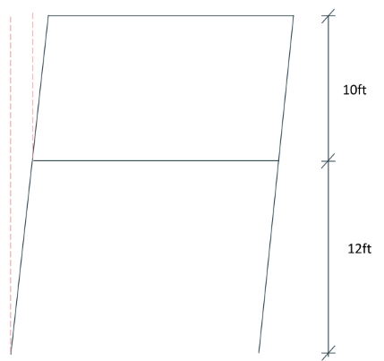Solution:
Step 1: Determine the allowable drift equation
Allowable story drift is based on two components: risk category and type of structure. In the problem statement, both are given such that the risk category is II and the type of structure is steel ordinary frame. So let’s refer to ASCE 7-16 Table 12.12-1. These components fall under the first column where the allowable drift equation we’ll use is $$ 0.020h_s_x $$.
Step 2: Determine allowable drift ratio for roof.
Since we know our equation is $$ 0.020h_s_x $$, let’s determine what hsx. Hsx is the height between the level of interest and the floor below it. In this case, for the roof level, it is 10 ft.
$$ 0.020h_s_x = 0.020(120”) = 2.4” $$
Let’s proceed with the same procedure for the 2nd level.
$$ 0.020h_s_x = 0.020(144”) = 2.88” $$
Step 3: Determine drift and compare.
Drift is the difference between the deflection at each level.
The deflection for the roof and 2nd level is 5” and 3”, respectively.
Let’s take the difference and compare the drift between the allowable drift ratio at each level.
5” -3” = 2”
Answer:
Roof: $$ ∆_r_o_o_f = 2" < ∆_a = 2.4" ✔ $$
2nd Level: $$ ∆_2_n_d = 3" > ∆_a = 2.4" ✖ $$
Question: What is the allowable story drift ratio for the following structure? The University of Wisconsin wants to design more parking garages on campus so more space is viable for those with cars. A 4-story parking structure shall be designed as special reinforced concrete shear walls with a height of 40 ft, where site class = E. SS = 3.0, S1 = 0.05.
Step 1: Determine the Risk Category. Check CBC Table 1604.5 for the risk category. Checking CBC Chapter 3 when we are unsure what category a parking garage falls under. So for this problem, let’s check out section 311 to see additional definitions for occupancy categories. CBC Section 311.3 notes that parking garages shall be classified as Group S-2. Referencing back to Table 1604.5, Group S-2 shall be categorized under Risk Category II.
Step 2: Determine allowable story drift ratio
Since we determined the risk category and the type of structure for this problem, refer to ASCE 7-16 Table 12.12-1. Since our structure is special reinforced concrete shear walls, it would fall under “All other Structures”.
Answer: The allowable story drift ratio would be 0.020.
Question: What is the required minimum structural separation of the following structures? Structure 1 shall be designed as a building frame system of ordinary reinforced concrete shear walls and structure 2 as ordinary plain masonry shear wall. Assume Ie is 1 for both structures.
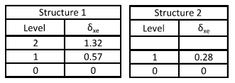 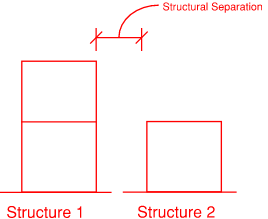Solution:
Refer to ASCE 7-16 Equation 12.12-1, $$ δ_M = (\C_d δ_m_a_x) / \I_e $$.
Let’s find the corresponding Cd for each of the structures by referring to ASCE 7-16 Table 12.2-1.
Since structure 1 is ordinary reinforced concrete shear walls, Cd = 4.5 For structure 2 - ordinary plain masonry shear wall - Cd = 1.25
Step 2: Determine the maximum inelastic response displacement δM
Structure 1:
$$ δ_M = (\C_d δ_m_a_x) / \I_e = (\4.5*0.57) / \1 = 2.57^”$$
Structure 2:
$$ δ_M = (\C_d δ_m_a_x) / \I_e = (\1.25*0.28) / \1 = 0.35^”$$
Note that if both structures were to collide, it would happen at level 1. Hence our focus for determining the separation is at level 1.
Step 3: Determine the minimum separation, δMT
$$ δ_M_T = √((δ_M_1)^2 + (δ_M_2)^2) = √((2.57^2) + (0.35^2)) = 2.59^" $$
Answer: Now that we have determined the minimum separation between the two structures; however, we might not want the buildings to be exactly 2.59” apart. Hence, we can be conservative and round up to 3”.